-
¿Qué es la usabilidad?
- Principios de usabilidad de Alan DIX
-
Facilidad de aprendizaje
- Predicción: poder determinar el efecto en el futuro
- Síntesis: Efectos de acciones pasada en el estado actual
- Familiaridad: El conocimiento del usuario de otra experiencia lo puede aplicar
- Generalidad: Aplica conocimiento a situaciones específicas
- Consistencia: Comportamiento semejante en situaciones similares
- Flexibilidad
-
Robustez
- Estabilidad
- Capacidad de observación: capacidad de evaluar el estado interno del sistema a partir de su representación
- Capacidad de recuperación: Confirmación previa y/o deshacer el cambio
- Capacidad de repuesta: notificar al usuario que se ha recibido su petición y que se está trabajando en ella
- Adaptación a las tareas: Permitir al usuario hacer las tareas que quiere realizar y que haga como quiere hacerlas
- Reglas del diseño de interfaces de Shneiderman
¿Qué es la usabilidad?
La extensión de un producto que puede ser usado por usuarios específicos para realizar objetivos específicos con efectividad, eficiencia y satisfacción en un contexto de uso específico.
Principios de usabilidad de Alan DIX
Facilidad de aprendizaje
Predicción: poder determinar el efecto en el futuro
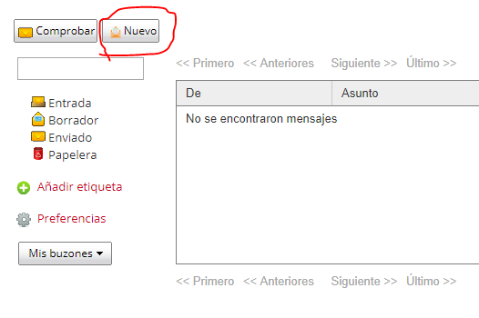
Síntesis: Efectos de acciones pasada en el estado actual
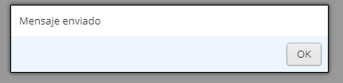
Familiaridad: El conocimiento del usuario de otra experiencia lo puede aplicar
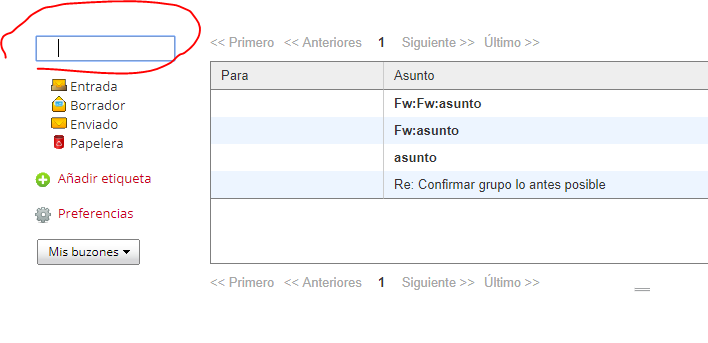
Generalidad: Aplica conocimiento a situaciones específicas
Podemos usar la herramienta sin tener el conocimiento especifico de la tarea.
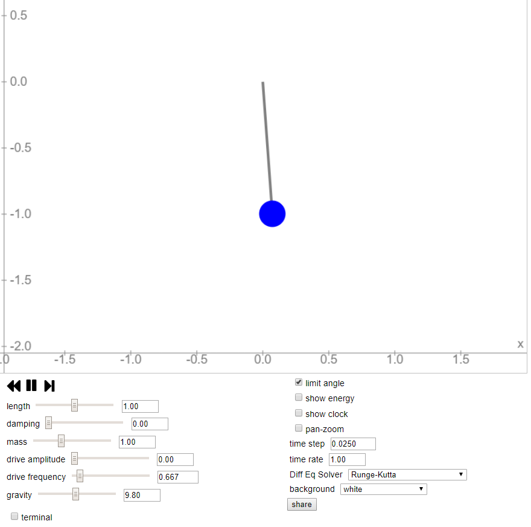
Consistencia: Comportamiento semejante en situaciones similares
Tanto crear un nuevo email, responder o reenviar, siempre abre la misma pestaña.
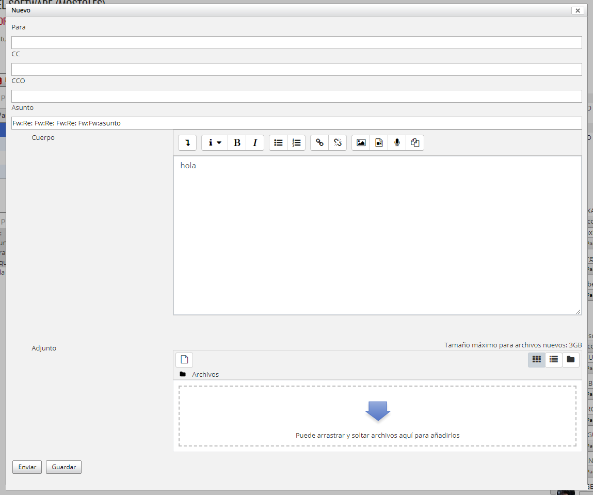
Flexibilidad
Iniciativa de diálogo: Libertad del usuario en el diálogo
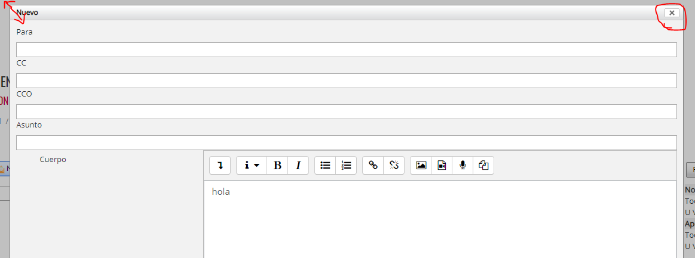
En este popup, el usuario puede cerrar la ventana pero no puede ajustar el tamaño que quiere
Multitarea: Completar varias tareas a la vez
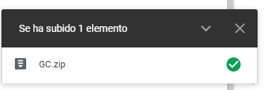
Control de tareas: Decide alternar o controlar las tareas
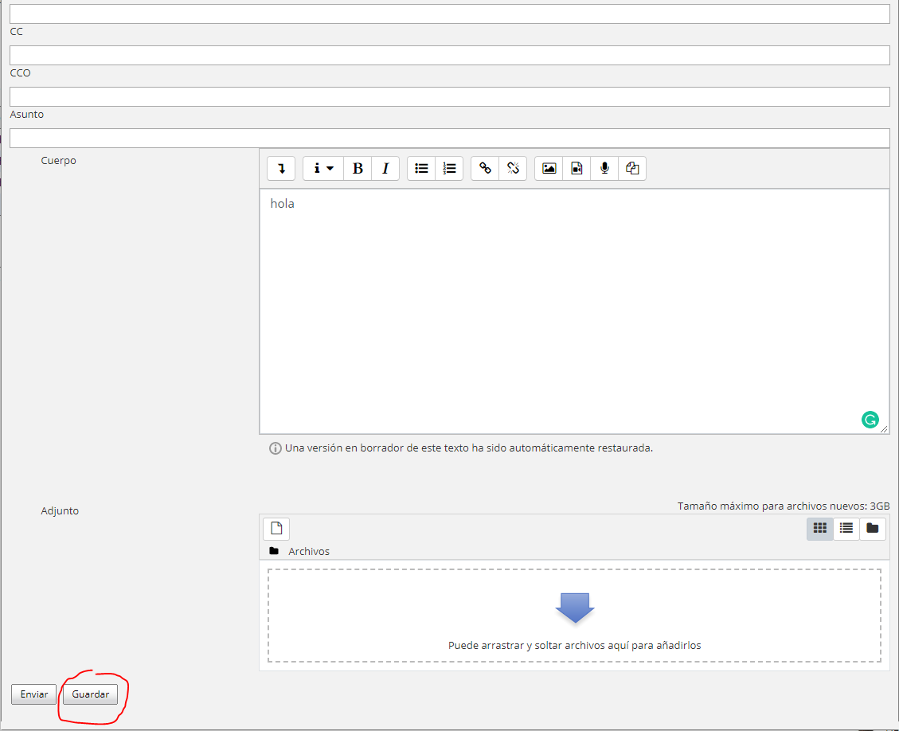
Adaptación: Modificación de la interfaz
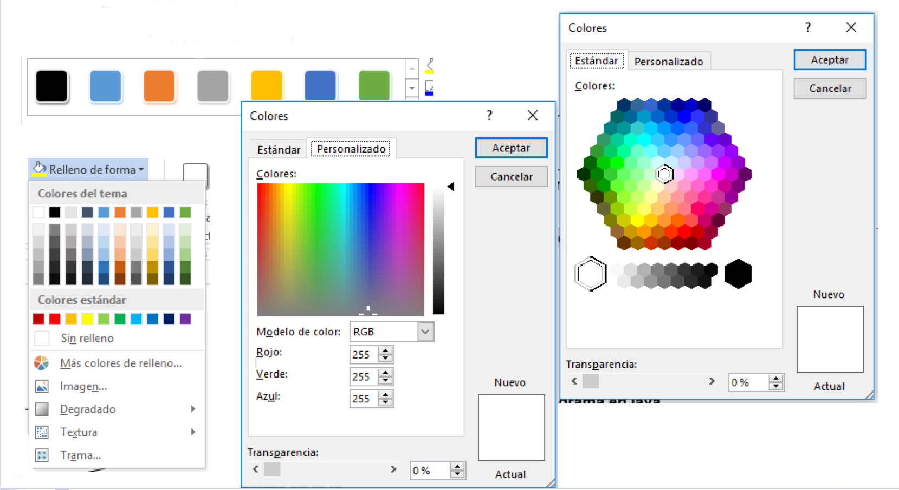
- Sustitución: Intercambiar valores de una entrada
Robustez
Estabilidad
Capacidad de observación: capacidad de evaluar el estado interno del sistema a partir de su representación
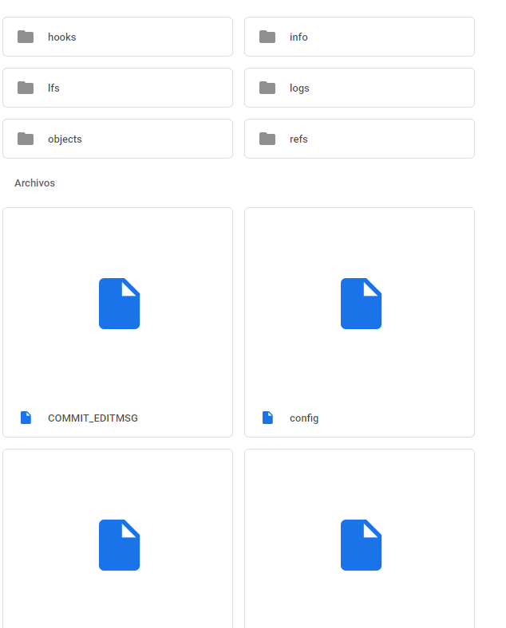
Capacidad de recuperación: Confirmación previa y/o deshacer el cambio
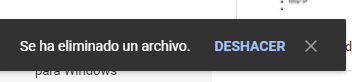
Capacidad de repuesta: notificar al usuario que se ha recibido su petición y que se está trabajando en ella
Adaptación a las tareas: Permitir al usuario hacer las tareas que quiere realizar y que haga como quiere hacerlas
Reglas del diseño de interfaces de Shneiderman
-
Esforzarse por conseguir consistencia
- terminología consistente
- formato consistente.
-
Atender a la usabilidad universal: Respectar las necesidades de
plasticidad y adaptación de los usuarios y del diseño, facilitar
la transformación de contenidos
- tamaño de letra, color de fondo
- Ofrecer realimentación informativa: Para cada acción debe haber una realimentación
- Diseñar diálogos que conduzcan a la finalización: Las secuencias de acciones deben organizarse en comienzo, mitad y final y la realimentación informativa confirma cada tramo.
-
Prevenir errores:
-
Diseñar el sistema para que el usuario no cometa errores
graves
- deshabilitar menús no apropiados
- no permitir alfanuméricos en campos numéricos
-
Cuando se comete error la IU debe detectarlo y ofrecer
instrucciones de recuperación simples, constructivas y
concretas
- sólo indica el campo erróneo e indicarle cuál y qué información se espera
- Las acciones erróneas no deben alertar al usuario
-
Diseñar el sistema para que el usuario no cometa errores
graves
- Permitir deshacer acciones
-
Dar soporte al locus de control interno
- Evitar la no causalidad y su estímulo para que los usarios sean iniciadores de acciones con la IU
-
Reducir la carga de memoria a corto plazo
- Visualizaciones simples
- Varias páginas sean una
- Reducir frecuencia de movimiento de ventanas